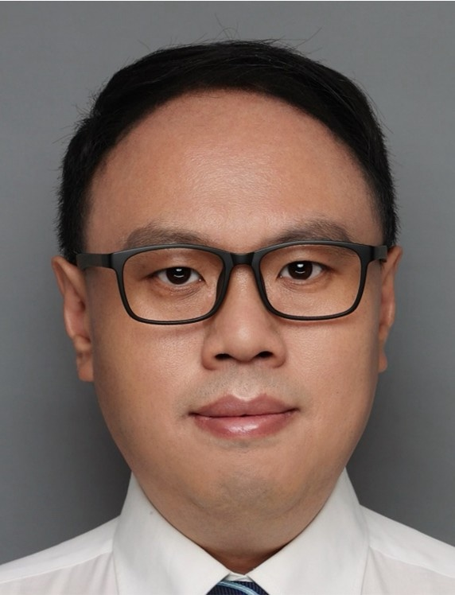

Professor, Institute of Natural Sciences, Shanghai Jiao Tong University
Professor
Institute of Natural Sciences
School of Mathematical Sciences
Shanghai Jiao Tong University
hwu81 [at] sjtu.edu.cn

I am a Professor at the Institute of Natural Sciences and the School of Mathematical Sciences, Shanghai Jiao Tong University. My research lies at the intersection of machine learning, molecular simulation, and scientific computing. I am particularly interested in developing AI generative models for molecular systems, with a focus on understanding and modeling their thermodynamics and kinetics. More broadly, my research also covers physics-informed machine learning, uncertainty quantification, and learning methods for complex stochastic dynamical systems.
We are always looking for highly motivated Ph.D. students and postdocs to join our group.
Machine learning for the thermodynamics and kinetics of molecular systems.
Generative and energy-based models that sample equilibrium molecular distributions and resolve free-energy landscapes.
Boltzmann Sampling · Enhanced Sampling · Free-Energy Estimation · Reweighting
Learning the long-timescale dynamics of molecular systems from equilibrium and biased simulations.
Reaction Coordinates · Transition States · Markov State Models · Transfer Operators · Kinetic Reweighting
Reliable machine learning for scientific computing, with principled error estimates.
Uncertainty-aware learning for PDEs and operator learning.
Neural Operators · Latent-Variable Models · Data-Driven Model Correction
Scalable Bayesian methods for high-dimensional inverse problems and stochastic dynamics.
Physics-Informed Learning · MCMC · Posterior Sampling
Academic positions
Professor, Institute of Natural Sciences, Shanghai Jiao Tong University
Associate Professor, Institute of Natural Sciences, Shanghai Jiao Tong University
Professor, School of Mathematical Sciences, Tongji University
Group leader, “Machine Learning for Time Series” group, Zuse Institute Berlin, Germany
Postdoctoral research
Freie Universität Berlin, Germany (Frank Noé's group)
Education
Ph.D., Computer Science and Technology, Tsinghua University
B.S., Computer Science and Technology, Tsinghua University
L. Ma, L. Guo, H. Wu, T. Zhou. Deep set based operator learning with uncertainty quantification. J. Comput. Phys. 562, 115011, 2026.
Y. Wang, H. Wu, S. Olsson. Marginal Girsanov reweighting: Stable variance reduction via neural ratio estimation. J. Chem. Theory Comput., 2026.
M. Zhang, Y. Wang, B. G. Keller, H. Wu. π-Girsanov: A generalized method to construct Markov state models from non-equilibrium and multiensemble biased simulations. J. Chem. Phys. 165, 074112, 2026.
L. Guo, H. Wu, X. Yu, T. Zhou. Monte Carlo fPINNs: Deep learning method for forward and inverse problems involving high dimensional fractional partial differential equations. Comput. Methods Appl. Mech. Eng. 400, 115523, 2022.
M. Hoffmann, M. Scherer, T. Hempel, A. Mardt, B. de Silva, B. E. Husic, S. Klus, H. Wu, N. Kutz, S. L. Brunton, F. Noé. Deeptime: a Python library for machine learning dynamical models from time series data. Mach. Learn.: Sci. Technol. 3, 015009, 2022.
H. Wu, J. Köhler, F. Noé. Stochastic normalizing flows. NeurIPS 33, 2020.
H. Wu, F. Noé. Variational approach for learning Markov processes from time series data. J. Nonlinear Sci. 30, 23–66, 2020.
F. Noé, S. Olsson, J. Köhler, H. Wu. Boltzmann generators: Sampling equilibrium states of many-body systems with deep learning. Science 365, eaaw1147, 2019.
A. Mardt, L. Pasquali, H. Wu, F. Noé. VAMPnets for deep learning of molecular kinetics. Nat. Commun. 9, 5, 2018.
H. Wu, A. Mardt, L. Pasquali, F. Noé. Deep generative Markov state models. NeurIPS 31, 2018.
S. Klus, F. Nüske, P. Koltai, H. Wu, I. Kevrekidis, C. Schütte, F. Noé. Data-driven model reduction and transfer operator approximation. J. Nonlinear Sci. 28, 985–1010, 2018.
H. Wu, F. Paul, C. Wehmeyer, F. Noé. Multiensemble Markov models of molecular thermodynamics and kinetics. Proc. Natl. Acad. Sci. USA 113, E3221–E3230, 2016.
J.-H. Prinz, H. Wu, M. Sarich, B. Keller, M. Senne, M. Held, J. D. Chodera, C. Schütte, F. Noé. Markov models of molecular kinetics: Generation and validation. J. Chem. Phys. 134, 174105, 2011.
Ph.D. students
Yuting Liang, Zhicheng Zhang, Shun Yang, Zhangqi Wu
Alumni
Yan Wang · Ph.D.
Senior Scientist, AstraZeneca
Mingyuan Zhang · visiting student
Master student, Universitat de Barcelona
Xiaochen Yu · M.Sc.
Data Analyst, Bank of Shanghai
Fangqing Liu · undergraduate
Senior Algorithm Engineer, Ant Group
Graduate
Numerical Methods for Partial Differential Equations
Optimization Methods
Computational Modeling of Scientific Problems
Deep Learning
Data Visualization
Advanced topics in computational mathematics
Finite Difference Methods · Finite Element Methods · Optimization · Spectral Methods
Undergraduate
Probability and Statistics
Deep Learning and Applications
Seminar courses
Marginal Girsanov reweighting [12], with Y. Wang and S. Olsson, is accepted at J. Chem. Theory Comput.
π-Girsanov [11], with M. Zhang, Y. Wang and B. G. Keller, is accepted at J. Chem. Phys.
Deep set based operator learning with uncertainty quantification [13], with L. Ma, L. Guo and T. Zhou, is out in J. Comput. Phys.
Moved to the Institute of Natural Sciences, SJTU.